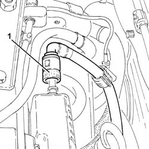
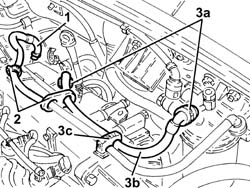

1040B48 Fuel RETURN PIPE from fuel filter to return manifold pipe - R.R.
- Path
- Procedures > 10 ENGINE > 1040 FUEL TANK AND PIPES > 1040B FUEL SUPPLY/RETURN CIRCUIT PIPE > 1040B48 Fuel RETURN PIPE from fuel filter to return manifold pipe - R.R.
- Kind
- repair procedure (removal / refitting; the operation number is the code)
- Applies to
- all engines; all production periods
- Interactive page
- https://sloeber94.github.io/elrnDB-fDbl/en/#/2584483
Applies to: all engines; all production periods
 Removing
Removing
 Refitting
Refitting1. Disconnect the rapid attachment of the fuel return pipe, return manifold pipe side.

Applies to: all engines; all production periods
1. Loosen the band and disconnect the supply pipe from the fuel filter to the pressure pump, pressure pump side.
2. Release the delivery pipe from the fuel filter to the pressure pump from the fixings.
3. Disconnect the rapid attachments (3a) and remove the fuel return pipe from filter to return manifold pipe (3b) after releasing it from the fixing (3c) on the air chamber.

Applies to: all engines; all production periods
Refitting
RemovingRefit in its seating the fuel return pipe from filter to return manifold pipe, connect the rapid attachments and secure it with its fixing to the air chamber.
Secure the supply pipe from fuel filter to pressure pump to the fixings.
Connect the supply pipe from fuel filter to pressure pump, pressure pump side, and tighten the band.
Connect the rapid attachment of the fuel return pipe, return manifold pipe side.